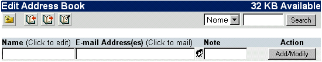

| A címtár egy adatbázis az ismerõsök email címeinek tárolásához, amihez könnyen hozzáféhetsz ha szükséged van rá. A címtárt kétféleképpen lehet elérni. Az egyik a szerkesztési mód, ahol létrehozhatsz, törölhetsz, módosíthatsz bejegyzéseket, és bõ eszköztár áll a rendelkezésedre. Illetve az egyszerû használat amikor csak egyszerûen fejléc információkat (Címzett, Téma, ...) szeretnél hozzáadni egy kimenõ levélhez.
A címtárhoz használatához elõször is létre kell hoznod bejegyzéseket. A szerkesztéshez meg kell nyitnod a címtárad. Ezt a Címjegyzék (
 ) gombra kattintással teheted meg a fõ ikonsorban. A címtár szerkesztéséhez kerülsz: ) gombra kattintással teheted meg a fõ ikonsorban. A címtár szerkesztéséhez kerülsz:

Az elsõ tevékenységed nyílván egy bejegyzés hozzáadása (Megjegyzés: A címtárban szerepelhetnek a rendszergazda által elõre beállított címek). Kattints a Név melletti szövegmezõre, és írd be a szükséges információt. A "Tab" billentyûvel ugorhatsz a következõ mezõre. Írhatsz megjegyzést is hogy könnyebben beugorjon ki az illetõ. Ha beírtál minden információt, kattints a Hozzáad/Módosít gombra. Ettõl fogva könnyen megtalálod az illetõ címét ha írni akarsz neki.
A listába felvett címeket, neveket késõbb át is tudod írni. Az átíráshoz kattints a bejegyzés Nevére, és az feltûnik a szerkesztési mezõkben fent. A szövegmezõkben átírhatod az információkat amiket szeretnél. Ha készen vagy kattints a Hozzáad/Módosít gombra.
Bejegyzések törléséhez kattints az adott sor jobboldali Töröl gombjára. Ha minden bejegyzést törölni akarsz, nem kell egyesével vacakolnod velük. Egyszerûen kattints a "Mindet törli" gombra (
). Meg kell erõsítened a törlést, kattints az "OK"-ra a törlés megerõsítéséhez, vagy a "Mégsem"-re a visszavonáshoz.
Lehetõséged van több nevet egy csoportba foglalni. Ez lehetõvé teszi hogy egyazon levelet egy címtárbejegyzésen keresztül több embernek is elküldj. Címek csoportosításához, kattints a csoport ikonra (
). Egy új ablakot fogsz látni, benne az összes címtárbejegyzéseddel. Pipáld be mindazokat akiket hozzá akarsz adni a csoporthoz, és kattints a továbbra. Ha kész vagy kattints a Hozzáad/Módosítra. |